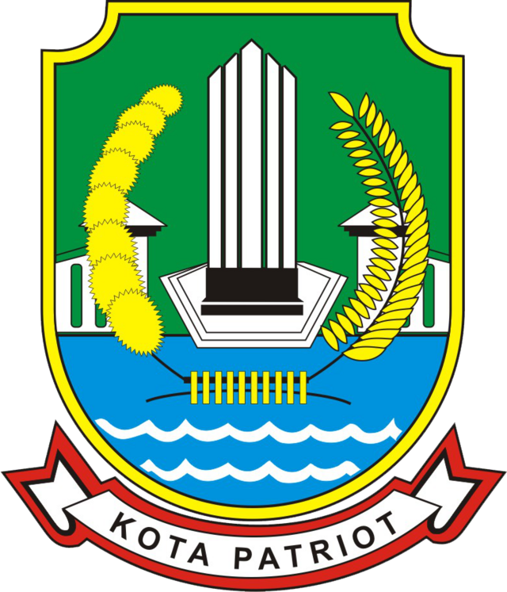

map/html


<!DOCTYPE html>
<html lang="id">
<head>
  <meta charset="UTF-8">
  <meta name="viewport" content="width=device-width, initial-scale=1.0">
  <title>Peta - Bekasi MoveMap</title>
  <meta name="description" content="Peta interaktif transportasi dan titik kemacetan di Kota Bekasi">

  <!-- Stylesheets -->
  <link rel="stylesheet" href="style.css">
  <link rel="stylesheet" href="https://unpkg.com/leaflet@1.9.4/dist/leaflet.css" />

  <!-- Fonts -->
  <link rel="preconnect" href="https://fonts.googleapis.com">
  <link rel="preconnect" href="https://fonts.gstatic.com" crossorigin>
  <link href="https://fonts.googleapis.com/css2?family=Inter:wght@400;500;600;700&display=swap" rel="stylesheet">

  <!-- Font Awesome Icons -->
  <link rel="stylesheet" href="https://cdnjs.cloudflare.com/ajax/libs/font-awesome/6.4.0/css/all.min.css">

   <style>
    .map-container {
      height: calc(100vh - 70px);
      width: 100%;
      margin-top: 70px;
    }
    
    #map {
      height: 100%;
      width: 100%;
      z-index: 1;
    }
    
    .map-controls {
      position: absolute;
      top: 80px;
      right: 10px;
      z-index: 1000;
      background: white;
      padding: 1rem;
      border-radius: var(--radius);
      box-shadow: var(--shadow-lg);
      width: 300px;
      max-width: 90%;
    }
    
    .layer-control {
      margin-bottom: 1rem;
    }
    
    .layer-control h3 {
      font-size: 1rem;
      margin-bottom: 0.5rem;
    }
    
    .layer-options {
      display: flex;
      flex-direction: column;
      gap: 0.5rem;
    }
    
    .layer-option {
      display: flex;
      align-items: center;
      gap: 0.5rem;
    }
    
    .layer-option input {
      margin: 0;
    }
    
    .legend {
      margin-top: 1rem;
      padding-top: 1rem;
      border-top: 1px solid var(--gray-200);
    }
    
    .legend h3 {
      font-size: 1rem;
      margin-bottom: 0.5rem;
    }
    
    .legend-item {
      display: flex;
      align-items: center;
      gap: 0.5rem;
      margin-bottom: 0.25rem;
    }
    
    .legend-color {
      width: 16px;
      height: 16px;
      border-radius: 50%;
    }
    
    .blue {
      background-color: var(--blue-primary);
    }
    
    .purple {
      background-color: var(--purple-primary);
    }
    
    .orange {
      background-color: var(--orange-primary);
    }
    
    .green {
      background-color: #10b981;
    }
  </style>
</head>

<body>
  <!-- Header & Navigation -->
   <header class="header">
    <div class="container">
      <div class="header-content">
        <div class="logo">
          
          <div class="logo-text">
            <h1>Bekasi MoveMap</h1>
          </div>
        </div>

        <nav class="desktop-nav">
          <a href="index.html#home" class="nav-item"><i class="fas fa-home"></i> Beranda</a>
          <a href="map.html#map" class="nav-item active"><i class="fas fa-map"></i> Peta</a>
          <a href="data.html#data" class="nav-item"><i class="fas fa-chart-bar"></i> Data & Statistik</a>
          <a href="index.html#developer" class="nav-item"><i class="fas fa-users"></i> Pengembang</a>
          <a href="index.html#contact" class="nav-item"><i class="fas fa-phone"></i> Kontak</a>
        </nav>

        <button class="mobile-menu-btn">
          <i class="fas fa-bars"></i>
        </button>
      </div>

      <nav class="mobile-nav">
        <a href="index.html#home" class="nav-item"><i class="fas fa-home"></i> Beranda</a>
        <a href="map.html#map" class="nav-item"><i class="fas fa-map"></i> Peta</a>
        <a href="data.html#data" class="nav-item"><i class="fas fa-chart-bar"></i> Data & Statistik</a>
        <a href="index.html#developer" class="nav-item"><i class="fas fa-users"></i> Pengembang</a>
        <a href="index.html#contact" class="nav-item"><i class="fas fa-phone"></i> Kontak</a>
      </nav>
    </div>
  </header>

  <!-- Map Section -->
  <main>
    <section id="map" class="map-section">
      <div class="map-container">
        <div id="map"></div>
        <div class="map-controls">
      <h2 class="text-lg font-bold mb-4">Kontrol Peta</h2>
      
      <div class="layer-control">
        <div class="legend">
        <h3>Legenda</h3>
        <div class="legend-item">
          <i class="fas fa-bus" style="color: var(--blue-primary);"></i>
          <span>Halte Bus</span>
        </div>
        <div class="legend-item">
           <i class="fas fa-train" style="color: var(--purple-primary);"></i>
          <span>Stasiun KRL/LRT</span>
        </div>
        <div class="legend-item">
          <i class="fas fa-bus-alt" style="color: #10b981;"></i>
          <span>Terminal</span>
        </div>
        <div class="legend-item">
          <i class="fas fa-car-crash" style="color: var(--orange-primary);"></i>
          <span>Titik Rawan Macet</span>
        </div>
      </div>
        
        <h3>Layer</h3>
        <div class="layer-options">
          <label class="layer-option">
            <input type="checkbox" name="layer" value="batas_admin" checked>
            <span>Batas Administrasi</span>
          </label>
          <label class="layer-option">
            <input type="checkbox" name="layer" value="jaringan_jalan" checked>
            <span>Jaringan Jalan</span>
          </label>
        </div>
      </div>
      
      <div class="layer-control">
        <h3>Transportasi & Kemacetan</h3>
        <label class="layer-option">
            <input type="checkbox" name="layer" value="halte" checked>
            <span>Halte Bus</span>
          </label>
          <label class="layer-option">
            <input type="checkbox" name="layer" value="terminal" checked>
            <span>Terminal</span>
          </label>
          <label class="layer-option">
            <input type="checkbox" name="layer" value="stasiun_krl" checked>
            <span>Stasiun KRL</span>
          </label>
          <label class="layer-option">
            <input type="checkbox" name="layer" value="stasiun_lrt" checked>
            <span>Stasiun LRT</span>
          </label>
          <label class="layer-option">
            <input type="checkbox" name="layer" value="titik_macet" checked>
            <span>Titik Rawan Macet</span>
          </label>
        </div>
      </div>
      
    </div>
  </div>
      </div>
    </section>
  </main>

  <!-- Footer -->
  <footer id="contact">
    <div class="container">
      <div class="footer-content">
        <div class="footer-about">
          <div class="footer-logo">
            <div>
              <h3>Bekasi MoveMap</h3>
              <p>WebGIS Transportasi</p>
            </div>
          </div>
          <p>Platform WebGIS untuk analisis transportasi dan kemacetan di Kota Bekasi</p>
        </div>

        <div class="footer-menu">
          <h4>Menu</h4>
          <a href="index.html#home">Beranda</a>
          <a href="map.html#map">Peta</a>
          <a href="data.html#data">Data & Statistik</a>
          <a href="index.html#developer">Pengembang</a>
          <a href="index.html#contact">Kontak</a>
        </div>

        <div class="footer-contact">
          <h4>Kontak</h4>
          <p>Email: adeliamarsya@up.edu</p>
          <p>No. Telp: +62 812-8592-3410</p>
          <p>© 2025 Bekasi MoveMap</p>
        </div>
      </div>
    </div>
  </footer>

  <!-- Scripts -->
 <script src="https://unpkg.com/leaflet@1.9.4/dist/leaflet.js"></script>
  <script>
    document.addEventListener('DOMContentLoaded', function() {
      // Mobile Menu Toggle
      const mobileMenuBtn = document.querySelector('.mobile-menu-btn');
      const mobileNav = document.querySelector('.mobile-nav');
      
      mobileMenuBtn.addEventListener('click', function() {
        mobileNav.classList.toggle('active');
        
        // Change icon
        const icon = mobileMenuBtn.querySelector('i');
        if (mobileNav.classList.contains('active')) {
          icon.classList.remove('fa-bars');
          icon.classList.add('fa-times');
        } else {
          icon.classList.remove('fa-times');
          icon.classList.add('fa-bars');
        }
      });
      
      // Initialize map
      const map = L.map('map').setView([-6.2349, 106.9896], 12); // Bekasi coordinates
      
      // Add base tile layer (OpenStreetMap)
      L.tileLayer('https://{s}.tile.openstreetmap.org/{z}/{x}/{y}.png', {
        attribution: '&copy; <a href="https://www.openstreetmap.org/copyright">OpenStreetMap</a> contributors'
      }).addTo(map);

       // --- KODE INI UNTUK MENAMBAHKAN KONTROL ZOOM JIKA TIDAK MUNCUL SECARA DEFAULT ---
            // Leaflet umumnya sudah menambahkan kontrol zoom secara default.
            // Baris ini hanya diperlukan jika kontrol zoom tidak muncul atau kamu ingin mengubah posisinya.
            // L.control.zoom({ position: 'topleft' }).addTo(map); 
            // (Posisi bisa: 'topleft', 'topright', 'bottomleft', 'bottomright')

            // Layer groups
            const halteBusLayer = L.layerGroup().addTo(map);
            const terminalLayer = L.layerGroup().addTo(map);
            const stasiunKRLLayer = L.layerGroup().addTo(map);
            const stasiunLRTLayer = L.layerGroup().addTo(map);
            const titikMacetLayer = L.layerGroup().addTo(map);
            const batasAdminLayer = L.layerGroup().addTo(map);
            const jaringanJalanLayer = L.layerGroup().addTo(map);
            const bufferLayer = L.layerGroup();
            const heatmapLayer = L.layerGroup();

            // --- Fungsi untuk mewarnai kecamatan secara dinamis ---
            const colorPalette = [
                '#FF6347', '#4682B4', '#3CB371', '#FFD700', '#DA70D6', '#FFA500',
                '#6A5ACD', '#8B4513', '#20B2AA', '#DC143C', '#7CFC00', '#4B0082',
                '#ADD8E6', '#F08080', '#90EE90', '#DDA0DD', '#FFB6C1', '#B0C4DE'
            ]; // Palet warna (bisa ditambah jika kecamatannya banyak)
            const kecamatanColors = new Map(); // Untuk menyimpan warna unik per kecamatan
            let colorIndex = 0;

            function getKecamatanColor(kecamatanName) {
                if (!kecamatanName) return '#ccc'; // Warna default jika nama tidak ada
                if (!kecamatanColors.has(kecamatanName)) {
                    kecamatanColors.set(kecamatanName, colorPalette[colorIndex % colorPalette.length]);
                    colorIndex++;
                }
                return kecamatanColors.get(kecamatanName);
            }
            // --- End Fungsi Mewarnai Kecamatan ---

            // Function to create popup content from feature properties
            function createPopupContent(properties) {
                let content = '<div class="popup-content">';

                // Untuk Batas Administrasi (asumsi properti nama kecamatan adalah 'NAMOBJ')
                if (properties.wadmkc) {
                    content += `<h3>Kecamatan ${properties.wadmkc}</h3>`;
                }
                
                // Untuk Titik (Halte, Stasiun, Terminal, Titik Macet)
                else if (properties.Nama) { // Properti 'Nama' dari GeoJSON titik yang kamu berikan
                    content += `<h3>${properties.Nama}</h3>`;
                } else if (properties.name) { // Fallback ke properti 'name' umum
                    content += `<h3>${properties.name}</h3>`;
                }

                if (properties.Keterangan) { // Properti 'Keterangan' dari GeoJSON titik
                    content += `<p>${properties.Keterangan}</p>`;
                } else if (properties.description) { // Fallback ke properti 'description' umum
                    content += `<p>${properties.description}</p>`;
                }

                if (properties.category) { // Jika ada properti 'category'
                    content += `<p><strong>Kategori:</strong> ${properties.category}</p>`;
                }
                if (properties['Google Maps']) { // Jika ada properti 'Google Maps'
                    content += `<p><a href="${properties['Google Maps']}" target="_blank">Lihat di Google Maps</a></p>`;
                }

                content += '</div>';
                return content;
            }

            // Function to load GeoJSON data from an external URL
            function loadGeoJSON(url, targetLayer, options = {}) {
                fetch(url)
                    .then(response => {
                        if (!response.ok) {
                            throw new Error(`HTTP error! status: ${response.status} - ${response.statusText}`);
                        }
                        return response.json();
                    })
                    .then(data => {
                        L.geoJSON(data, {
                            // Style untuk garis/polygon
                            style: options.style, // Gunakan style yang diteruskan (bisa fungsi atau objek)
                            // pointToLayer untuk titik (marker kustom)
                            pointToLayer: options.pointToLayer || function (feature, latlng) {
                                return L.marker(latlng); // Marker default jika pointToLayer tidak diteruskan
                            },
                            onEachFeature: function(feature, layer) {
                                if (feature.properties) {
                                    layer.bindPopup(createPopupContent(feature.properties));
                                }
                                // Event untuk highlight saat mouseover pada polygon
                                if (feature.geometry.type === "Polygon" || feature.geometry.type === "MultiPolygon") {
                                    layer.on({
                                        mouseover: function (e) {
                                            const layer = e.target;
                                            layer.setStyle({
                                                weight: 3,
                                                color: '#666', // Warna border saat hover
                                                dashArray: '',
                                                fillOpacity: 0.7
                                            });
                                            layer.bringToFront(); // Pastikan layer ini di depan
                                        },
                                        mouseout: function (e) {
                                            // Reset gaya ke gaya awal yang ditentukan oleh options.style
                                            // Karena style bisa berupa fungsi, kita perlu mere-evaluate-nya
                                            let originalStyle;
                                            if (typeof options.style === 'function') {
                                                originalStyle = options.style(feature);
                                            } else {
                                                originalStyle = options.style;
                                            }
                                            e.target.setStyle(originalStyle);
                                        }
                                    });
                                }
                            },
                            filter: function(feature) {
                                if (feature.geometry === null) {
                                    return false;
                                }
                                if (feature.geometry.type === "Point" && (!Array.isArray(feature.geometry.coordinates) || feature.geometry.coordinates.length < 2 || feature.geometry.coordinates.some(coord => coord === null || isNaN(coord)))) {
                                    return false;
                                }
                                return true;
                            }
                        }).addTo(targetLayer);
                        console.log(`GeoJSON dari ${url} berhasil dimuat!`);
                    })
                    .catch(error => console.error(`Error memuat GeoJSON dari ${url}:`, error));
            }

            // --- Panggil Fungsi loadGeoJSON untuk Setiap File GeoJSON Kamu ---

            // 1. Batas Administrasi (Polygon) - Akan diwarnai per kecamatan
            // PASTIKAN NAMA PROPERTI KECAMATAN DI GEOJSON ADALAH 'NAMOBJ'
            loadGeoJSON('data-spasial/Batas Administrasi Kota Bekasi.geojson', batasAdminLayer, {
                style: function(feature) {
                    return {
                        fillColor: getKecamatanColor(feature.properties.NAMOBJ), // Panggil fungsi warna di sini
                        weight: 1,           // Ketebalan garis batas
                        opacity: 0.8,        // Transparansi garis
                        color: 'white',      // Warna garis batas (putih untuk kontras)
                        dashArray: '3',      // Garis putus-putus
                        fillOpacity: 0.6     // Transparansi area isi
                    };
                }
            });

            // 2. Jaringan Jalan (LineString)
            loadGeoJSON('data-spasial/Jaringan Jalan Kota Bekasi.geojson', jaringanJalanLayer, {
                style: {
                    color: '#a0aec0', // Warna garis (abu-abu)
                    weight: 2,         // Ketebalan garis
                    opacity: 0.7       // Transparansi garis
                }
            });

            // 3. Halte Bus (Point) - VISUALISASI SAMA DENGAN LEGENDA
            loadGeoJSON('data-spasial/halte_bus.geojson', halteBusLayer, {
                pointToLayer: function (feature, latlng) {
                    return L.marker(latlng, {
                        icon: L.divIcon({
                            className: 'custom-div-icon',
                            html: '<div style="background-color:#3b82f6;width:12px;height:12px;border-radius:50%;"></div>', // Warna lingkaran biru
                            iconSize: [12, 12]
                        })
                    });
                }
            });

            // 4. Terminal (Point) - VISUALISASI SAMA DENGAN LEGENDA
            loadGeoJSON('data-spasial/terminal.geojson', terminalLayer, {
                pointToLayer: function (feature, latlng) {
                    return L.marker(latlng, {
                        icon: L.divIcon({
                            className: 'custom-div-icon',
                            html: '<div style="background-color:#10b981;width:14px;height:14px;border-radius:50%;"></div>', // Warna lingkaran hijau
                            iconSize: [14, 14]
                        })
                    });
                }
            });

            // 5. Stasiun KRL (Point) - VISUALISASI SAMA DENGAN LEGENDA
            loadGeoJSON('data-spasial/stasiun_KRL.geojson', stasiunKRLLayer, {
                pointToLayer: function (feature, latlng) {
                    return L.marker(latlng, {
                        icon: L.divIcon({
                            className: 'custom-div-icon',
                            html: '<div style="background-color:#8b5cf6;width:14px;height:14px;border-radius:50%;"></div>', // Warna lingkaran ungu
                            iconSize: [14, 14]
                        })
                    });
                }
            });

            // 6. Stasiun LRT (Point) - VISUALISASI SAMA DENGAN LEGENDA
            loadGeoJSON('data-spasial/stasiun_LRT.geojson', stasiunLRTLayer, {
                pointToLayer: function (feature, latlng) {
                    return L.marker(latlng, {
                        icon: L.divIcon({
                            className: 'custom-div-icon',
                            html: '<div style="background-color:#8b5cf6;width:14px;height:14px;border-radius:50%;"></div>', // Warna lingkaran ungu (sama dengan KRL)
                            iconSize: [14, 14]
                        })
                    });
                }
            });

            // 7. Titik Rawan Macet (Point) - VISUALISASI SAMA DENGAN LEGENDA
            loadGeoJSON('data-spasial/titik_rawan_macet.geojson', titikMacetLayer, {
                pointToLayer: function (feature, latlng) {
                    return L.marker(latlng, {
                        icon: L.divIcon({
                            className: 'custom-div-icon',
                            html: '<div style="background-color:#f97316;width:14px;height:14px;border-radius:50%;"></div>', // Warna lingkaran oranye
                            iconSize: [14, 14]
                        })
                    });
                }
            });

            // Layer control event listeners (tidak ada perubahan)
            document.querySelectorAll('input[name="layer"]').forEach(input => {
                input.addEventListener('change', function() {
                    const layerName = this.value;
                    const isChecked = this.checked;

                    switch(layerName) {
                        case 'batas_admin':
                            if (isChecked) map.addLayer(batasAdminLayer);
                            else map.removeLayer(batasAdminLayer);
                            break;
                        case 'jaringan_jalan':
                            if (isChecked) map.addLayer(jaringanJalanLayer);
                            else map.removeLayer(jaringanJalanLayer);
                            break;
                        case 'halte':
                            if (isChecked) map.addLayer(halteBusLayer);
                            else map.removeLayer(halteBusLayer);
                            break;
                        case 'terminal':
                            if (isChecked) map.addLayer(terminalLayer);
                            else map.removeLayer(terminalLayer);
                            break;
                        case 'stasiun_krl':
                            if (isChecked) map.addLayer(stasiunKRLLayer);
                            else map.removeLayer(stasiunKRLLayer);
                            break;
                        case 'stasiun_lrt':
                            if (isChecked) map.addLayer(stasiunLRTLayer);
                            else map.removeLayer(stasiunLRTLayer);
                            break;
                        case 'titik_macet':
                            if (isChecked) map.addLayer(titikMacetLayer);
                            else map.removeLayer(titikMacetLayer);
                            break;
                    }
                });
            });

            // Analysis control event listeners (tidak ada perubahan)
            document.querySelectorAll('input[name="analysis"]').forEach(input => {
                input.addEventListener('change', function() {
                    const analysisType = this.value;
                    const isChecked = this.checked;

                    switch(analysisType) {
                        case 'buffer':
                            if (isChecked) {
                                const circle = L.circle([-6.2349, 106.9896], {
                                    color: '#3b82f6',
                                    fillColor: '#3b82f6',
                                    fillOpacity: 0.2,
                                    radius: 500
                                }).addTo(bufferLayer);
                                map.addLayer(bufferLayer);
                            } else {
                                map.removeLayer(bufferLayer);
                                bufferLayer.clearLayers();
                            }
                            break;
                        case 'heatmap':
                            if (isChecked) {
                                alert('Fungsionalitas Heatmap membutuhkan plugin Leaflet.heat dan format data spesifik. Ini adalah placeholder.');
                            } else {
                                map.removeLayer(heatmapLayer);
                                heatmapLayer.clearLayers();
                            }
                            break;
                    }
                });
            });

        }); // Tutup document.addEventListener
    </script>
</body>
</html>
